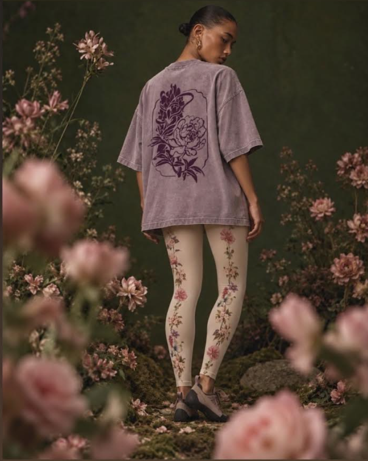
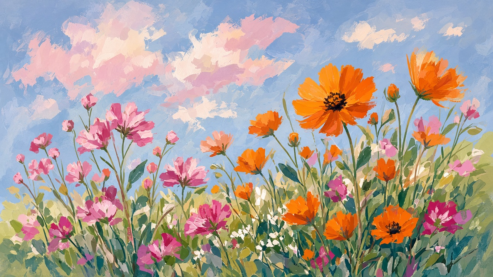

Atlas
Crags I’ve climbed and countries I’ve wandered. Pan, zoom, click a pin.
● climbing ● travel
Projects
Perena for money infrastructure. Stoneflower for holds and design.
Field notes
Color maximalist. Movement obsessed.
I’m a boulderer who builds money rails by day and climbing objects by night. The through-line is craft: beautiful things that also work hard.
Stoneflower is the side quest becoming a real quest — fine holds, good design, community at the wall.


Love
An earnest job description for a serious relationship.
A JD for My Future Partner(s)
An earnest job description for a serious relationship.
Huge green flags
I admire people who build things. I love people who have conviction, think independently, and are obsessed with mastering their craft.
That might mean founders, designers, artists, traders, researchers, climbers—or anyone who's become extraordinary at something through years of obsession.
You don't have to share my career. You should probably share my curiosity.
Lifestyle compatibility
My ideal vacation is…
- sitting in front of rocks all day (climbing)
- activity based: skiing, hiking, skydiving, etc.
- exploring a new culture
You don't need to climb V10. But if your dream vacation is a week at an all-inclusive beach resort, we're probably optimizing for different things.
Multicultural and multilingual is a huge plus. I'd love a life that spans more than one country.
We'd probably get along if…
- Kind.
- Honest, especially when it's uncomfortable.
- Curious about a lot of things.
- Physically active.
- Wants children.
- Not actively religious.
Great to have
- Deeply passionate about your craft.
- Interested in investing, business, technology, or building things.
- Climbs. (Mega bonus points if you climb harder than I do.)
Relationship philosophy
I value relationships built on trust, admiration, and choosing each other repeatedly.
I form and maintain deep, long-term friendships with people of all genders. I hope you do too.
I'm naturally polyamorous, but I care more about building an extraordinary family than about following any particular relationship model. If we choose monogamy, I'd want it to be because we're intentionally building that life together—not because it's simply the default.
We'll probably frustrate each other if…
- You need to be the center of my social world.
- Curiosity isn't part of your identity.
- You'd rather stay comfortable than keep growing.
- You see trust as something to be earned through restriction rather than openness.
Tools
The Founder's Schema
An interactive self-assessment that surfaces the patterns quietly driving how you make decisions — especially valuable for founders.